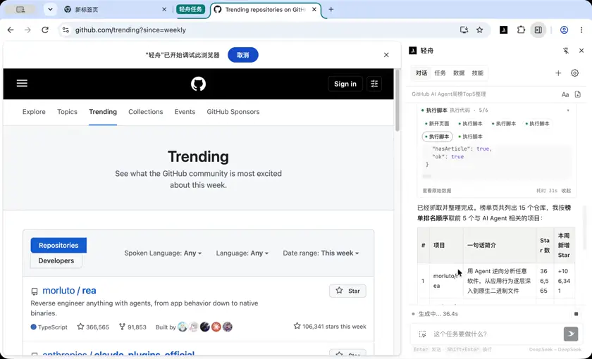

Weekly GitHub trending digest
Reads this week's Trending list, puts it into a table, and writes a short weekly summary.

打开 GitHub Trending 的本周榜单，挑出和 AI Agent 相关的前 5 个项目，整理成一张表：项目名、一句话简介、Star 数、本周新增 Star，再写 3 句话的周报总结。
最近思考
用户要求打开 GitHub Trending 本周榜单，挑出 AI Agent 相关的前 5 个项目，整理表格。需要实际打开页面。 先打开 GitHub Trending weekly。
我现在去打开 GitHub Trending 本周榜单。
历史思考 1
1/6
Now read the page. Use run_script to parse articles.
历史思考 2
2/6
Only 15 items returned — maybe the page shows 25 but our selector only got 15 because lazy load, or the trending page has 25 articles. Let me check whether more exists. Also need to scroll to load. Actually GitHub trending weekly page usually has 25 repos. Let me check count of article elements and total. Let me scroll and re-parse. Also filter AI Agent related. Let's determine which of these count. Already list seems: morluto/rea? Actually "morluto/rea" with 366,565 stars — that seems odd; real repo? Hmm, this could be a simulated page. Never mind. Let me re-parse after scrolling to ensure complete list.
历史思考 3
3/6
Page has only 15 items (unusual, but that's this page's reality). Now filter AI Agent related. Candidates related to AI Agent: 1. morluto/rea — "Reverse engineer anything with agents, from app behavior down to native binaries." — agent-related, yes. 2. anthropics/claude-plugins-official — Claude Code plugins directory — agent tooling related? It's plugin directory for Claude Code (an agent). Arguably related. 3. ruvnet/ruflo — "The original agent harness... " agent related yes. 4. android/skills — no description, Kotlin, likely Android skills for agents? Unknown. Need check. 5. K-Dense-AI/scientific-agent-skills — Agent Skills library — related. 6. anomalyco/opencode — open source coding agent — yes. 7. HKUDS/CLI-Anything — making software agent-native — yes. 8. cursor/plugins — Cursor plugin spec — IDE plugin, agent-adjacent. 9. akitaonrails/ai-memory — long term memory for agent coding CLIs — yes. 10. debpalash/VoiceStudio — voice cloning — not agent. 11. heygen-com/hyperframes — "Built for agents" — rendering video for agents; borderline. 12. ghidra — reverse engineering framework — not agent. 13. stablyai/orca — fleet of agents — yes. 14. ComfyUI — diffusion model GUI — not agent. 15. mksglu/context-mode — context window optimization for AI coding agents — yes. So there are more than 5 clearly agent-related. "前 5 个项目" — top 5 by ranking (trending order). Take the first 5 in trending order that are AI Agent related: 1. morluto/rea (106,341 weekly) 2. anthropics/claude-plugins-official (5,649) — Claude Code plugins; is this "AI Agent 相关"? It's plugin directory for Claude Code agent. Arguably yes but it's plugin ecosystem. 3. ruvnet/ruflo (3,708) 4. android/skills (1,384) — unknown; need to check what it is. 5. K-Dense-AI/scientific-agent-skills (3,967) Hmm. "前5个" ambiguous: top 5 by trending rank, or top 5 by weekly stars? I'd interpret as top 5 in trending order. But maybe user wants relevance-filtered top 5. Let me decide: pick AI Agent related in trending order, top 5. But android/skills unclear — check its page or description. Let's check the repo page quickly, or maybe just check whether it's related. Alternatively, maybe pick by strongest agent relevance. Let me check android/skills and claude-plugins-official quickly to determine relevance. Let's fetch android/skills page. Actually, we could exclude android/skills if unrelated (it might be "Android skills" for agent skills format). Let me check. Also confirm star counts from the page. Star numbers "366,565" for morluto/rea seems huge/simulated but use as-is. Let me open android/skills repo page in same tab? Better open new tab to preserve trending. But maybe just fetch via run_script fetch of the repo page HTML and extract description? That's a cross-origin fetch to github.com same origin, fine. Actually simpler: navigate won't hurt since data captured. But I might need re-verify. Use fetch in page script.
历史思考 4
4/6
android/skills has no description. Read its README to determine if agent-related.
历史思考 5
5/6
android/skills: AI-optimized agent skills for Android → agent-related (skills for agents). Yes, related. So top 5 in trending order that are AI Agent related: 1. morluto/rea — 366,565 stars, +106,341 weekly — reverse engineer with agents 2. anthropics/claude-plugins-official — 43,910, +5,649 — Claude Code plugins directory 3. ruvnet/ruflo — 78,497, +3,708 — agent harness/swarms 4. android/skills — 9,253, +1,384 — Android agent skills 5. K-Dense-AI/scientific-agent-skills — 53,899, +3,967 — scientific agent skills Hmm, but is anthropics/claude-plugins-official an "AI Agent" project? It's plugins for Claude Code agent — yes, agent tooling. And android/skills +1,384 is below opencode's 6,750, but trending order is rank order, not weekly stars. The user said "本周榜单...前5个项目" — I interpret as ranking order. But maybe user means top 5 by weekly new stars among agent-related ones? Ambiguous. Hmm. Consider giving top 5 by trending rank (榜单顺序) which is the more natural reading of "前5个". But a reader might expect the biggest gainers. I could present by ranking order and note the criterion, and if needed mention others. Actually, let me think: is the ranking order by weekly stars? In this page, order isn't strictly by weekly stars: 106,341, 5,649, 3,708, 1,384, 3,967, 6,750... So the page order isn't sorted by weekly gain — but GitHub trending ranks by an internal score, not just raw gain. So "榜单前5" = top 5 rows that are agent-related. I'll do that, and add a note about notable others (opencode 6,750 etc.). Actually to be more useful, maybe present top 5 in ranking order — that's the "榜单" reading. I'll add a brief note. Wait — should I verify stars/weekly from the row again? Already have. Let me also grab URLs. Let me also double check the list ordering is displayed rank order (article order = rank). Yes. Now create a table. Also write into data_store? Task is to "整理成一张表" — could be markdown table in reply. Data_store optional; but durable artifact protocol says collection tasks default to data_store. This is a small 5-row table; a markdown table in the reply suffices. Maybe also save to data_store for durability. I'll do both lightly — data_store table "github_trending_agent_weekly". Let's write rows and then reply with markdown table + 3-sentence summary. Star counts: format with commas. Note morluto/rea 366,565 — that's the page's number. Also note: rea is TypeScript, 91,853 forks. Let me write data_store.
最近思考
6/6
Now write reply with markdown table + 3-sentence summary + citations. Citations to github repos and trending page. Note: the byte size... fine. Present table sorted by 榜单排名. Add note on criterion and mention notable misses (opencode 6,750 weekly not in top5 due to rank order? Actually opencode is rank 6 and agent-related, only excluded because top-5 cutoff). Hmm — that's a bit awkward: opencode (6,750 新增) is more "agent" than claude-plugins... but by 榜单顺序 it's rank 6. Maybe better: give the 5 by 榜单排名 and add a one-line note "若按本周新增 Star 排序，第 6 位的 opencode（+6,750）会挤掉 android/skills". That's transparent. Let me write it.
新开页面
Trending repositories on GitHub thi…
1/6
执行脚本
Trending repositories on GitHub thi…
2/6
运行代码
async () => {
// 解析 GitHub Trending weekly 列表，提取项目名/简介/star/本周新增
const arts = [...document.querySelectorAll('article.Box-row')];
const rows = arts.map(a => {
const nameEl = a.querySelector('h2 a');
const name = nameEl ? nameEl.getAttribute('href').replace(/^\//, '') : '';
const desc = (a.querySelector('p')?.textContent || '').trim();
const lang = (a.querySelector('[itemprop="programmingLanguage"]')?.textContent || '').trim();
const starEl = a.querySelector('a[href$="/stargazers"]');
const stars = (starEl?.textContent || '').trim();
const forkEl = a.querySelector('a[href$="/forks"]');
const forks = (forkEl?.textContent || '').trim();
const today = (a.querySelector('span.float-sm-right')?.textContent || '').replace(/\s+/g, ' ').trim();
return { name, desc, lang, stars, forks, weekly: today };
});
return { ok: true, count: rows.length, rows };
}result
{
"count": 15,
"ok": true,
"rows": [
{
"desc": "Reverse engineer anything with agents, from app behavior down to native binaries.",
"forks": "91,853",
"lang": "TypeScript",
"name": "morluto/rea",
"stars": "366,565",
"weekly": "106,341 stars this week"
},
{
"desc": "Official, Anthropic-managed directory of high quality Claude Code Plugins.",
"forks": "4,625",
"lang": "Python",
"name": "anthropics/claude-plugins-official",
"stars": "43,910",
"weekly": "5,649 stars this week"
},
{
"desc": "🌊 The original agent harness. Deploy intelligent multi-player swarms, coordinate autonomous workflows, and build conversational AI systems. Features adaptive memory, self-learning intelligence, federation, vector RAG integration, and native Claude Code / Codex / Hermes and many more Integrated",
"forks": "9,229",
"lang": "TypeScript",
"name": "ruvnet/ruflo",
"stars": "78,497",
"weekly": "3,708 stars this week"
},
{
"desc": "",
"forks": "593",
"lang": "Kotlin",
"name": "android/skills",
"stars": "9,253",
"weekly": "1,384 stars this week"
},
{
"desc": "Turn any AI agent into an AI Scientist. The #1 Agent Skills library for science, used by 250,000+ scientists worldwide. 177 ready-to-use validated skills plus 100+ scientific databases covering biology, chemistry, medicine, and drug discovery. Compatible with Cursor, Claude Code, Codex, Pi, Antigravity, and the open Agent Skills standard.",
"forks": "4,757",
"lang": "Python",
"name": "K-Dense-AI/scientific-agent-skills",
"stars": "53,899",
"weekly": "3,967 stars this week"
},
{
"desc": "The open source coding agent.",
"forks": "29,432",
"lang": "TypeScript",
"name": "anomalyco/opencode",
"stars": "220,232",
"weekly": "6,750 stars this week"
},
{
"desc": "\"CLI-Anything: Making ALL Software Agent-Native\" -- CLI-Hub: https://clianything.cc/",
"forks": "5,066",
"lang": "Python",
"name": "HKUDS/CLI-Anything",
"stars": "56,256",
"weekly": "3,275 stars this week"
},
{
"desc": "Cursor plugin specification and official plugins",
"forks": "1,350",
"lang": "TypeScript",
"name": "cursor/plugins",
"stars": "13,615",
"weekly": "2,046 stars this week"
},
{
"desc": "Solution for long term memory for agent coding CLIs and to facilitate handoff between different agent vendors",
"forks": "897",
"lang": "Rust",
"name": "akitaonrails/ai-memory",
"stars": "12,796",
"weekly": "3,322 stars this week"
},
{
"desc": "VoiceStudio is the open-source, fully-local ElevenLabs alternative — voice cloning, voice design, video dubbing, dictation, transcription & audiobook creation in 646 languages.",
"forks": "9,039",
"lang": "Python",
"name": "debpalash/VoiceStudio",
"stars": "81,814",
"weekly": "13,581 stars this week"
},
{
"desc": "Write HTML. Render video. Built for agents.",
"forks": "6,340",
"lang": "TypeScript",
"name": "heygen-com/hyperframes",
"stars": "70,042",
"weekly": "5,669 stars this week"
},
{
"desc": "Ghidra is a software reverse engineering (SRE) framework",
"forks": "10,453",
"lang": "Java",
"name": "NationalSecurityAgency/ghidra",
"stars": "93,181",
"weekly": "4,892 stars this week"
},
{
"desc": "Orca is the place for working with a fleet of agents (e.g. Grok Bot, Claude Code). Run any coding agent with your own subscription. Available on desktop, mobile and remote runtime.",
"forks": "6,491",
"lang": "TypeScript",
"name": "stablyai/orca",
"stars": "102,840",
"weekly": "9,401 stars this week"
},
{
"desc": "The most powerful and modular diffusion model GUI, api and backend with a graph/nodes interface. The fastest local inference engine in the world.",
"forks": "16,748",
"lang": "Python",
"name": "Comfy-Org/ComfyUI",
"stars": "142,027",
"weekly": "4,375 stars this week"
},
{
"desc": "Context window optimization for AI coding agents. Sandboxes tool output (98% reduction), persists session memory, and enforces routing across 17 platforms via MCP + hooks.",
"forks": "2,194",
"lang": "TypeScript",
"name": "mksglu/context-mode",
"stars": "31,844",
"weekly": "2,271 stars this week"
}
]
}
执行脚本
Trending repositories on GitHub thi…
3/6
运行代码
async () => {
// 滚动到底部并重新解析，确认 Trending 列表完整条目数
const wait = ms => new Promise(r => setTimeout(r, ms));
const seen = new Set();
for (let i = 0; i < 12; i++) {
window.scrollTo(0, document.body.scrollHeight);
await wait(600);
const n = document.querySelectorAll('article.Box-row').length;
seen.add(n);
if (n >= 25) break;
}
window.scrollTo(0, 0);
await wait(400);
const arts = [...document.querySelectorAll('article.Box-row')];
return {
ok: true,
total: arts.length,
seenCounts: [...seen],
names: arts.map(a => (a.querySelector('h2 a')?.getAttribute('href') || '').replace(/^\//, ''))
};
}result
{
"names": [
"morluto/rea",
"anthropics/claude-plugins-official",
"ruvnet/ruflo",
"android/skills",
"K-Dense-AI/scientific-agent-skills",
"anomalyco/opencode",
"HKUDS/CLI-Anything",
"cursor/plugins",
"akitaonrails/ai-memory",
"debpalash/VoiceStudio",
"heygen-com/hyperframes",
"NationalSecurityAgency/ghidra",
"stablyai/orca",
"Comfy-Org/ComfyUI",
"mksglu/context-mode"
],
"ok": true,
"seenCounts": [
15
],
"total": 15
}
执行脚本
Trending repositories on GitHub thi…
4/6
运行代码
async () => {
// 补充确认两个描述为空/模糊的项目定位：android/skills 与 anthropics/claude-plugins-official
const out = {};
for (const repo of ['android/skills', 'anthropics/claude-plugins-official', 'morluto/rea', 'ruvnet/ruflo']) {
try {
const res = await fetch('https://github.com/' + repo, { credentials: 'include' });
const html = await res.text();
const desc = (html.match(/<meta name="description" content="([^"]*)"/) || [])[1] || '';
const topics = [...html.matchAll(/data-ga-click="Topic, repository page"[^>]*>([^<]+)</g)].map(m => m[1]);
out[repo] = { desc: desc.slice(0, 300), topics: topics.slice(0, 8) };
} catch (e) { out[repo] = { error: e.message }; }
}
return { ok: true, out };
}result
{
"ok": true,
"out": {
"android/skills": {
"desc": "Contribute to android/skills development by creating an account on GitHub.",
"topics": []
},
"anthropics/claude-plugins-official": {
"desc": "Official, Anthropic-managed directory of high quality Claude Code Plugins. - anthropics/claude-plugins-official",
"topics": []
},
"morluto/rea": {
"desc": "Reverse engineer anything with agents, from app behavior down to native binaries. - morluto/rea",
"topics": []
},
"ruvnet/ruflo": {
"desc": "🌊 The original agent harness. Deploy intelligent multi-player swarms, coordinate autonomous workflows, and build conversational AI systems. Features adaptive memory, self-learning intelligence, federation, vector RAG integration, and native Claude Code / Codex / Hermes and many more Integrated - ru",
"topics": []
}
}
}
执行脚本
Trending repositories on GitHub thi…
5/6
运行代码
async () => {
// 读取 android/skills 的 README 摘要，判断是否属于 AI Agent 方向
const res = await fetch('https://github.com/android/skills', { credentials: 'include' });
const html = await res.text();
const m = html.match(/<article[^>]*class="[^"]*markdown-body[^"]*"[^>]*>([\s\S]*?)<\/article>/);
let text = '';
if (m) {
const div = document.createElement('div');
div.innerHTML = m[1];
text = div.innerText.replace(/\n{3,}/g, '\n\n').trim();
}
return { ok: true, hasArticle: !!m, excerpt: text.slice(0, 1200) };
}result
{
"excerpt": "Android skills\nAndroid skills are a dedicated repository of AI-optimized, modular instructions and\nresources, to help agents better understand and execute specific patterns that follow the best\npractices and guidance on Android development\nfrom developer.android.com.\nAndroid skills follow the open-standard agent skills - markdown\nfiles (SKILL.md) that provide a technical specification of a task, and ground LLMs with\ninformation on specialized domains and workflows.\nOur Android skill development focuses on use cases and workflows where evaluations show LLMs\nunderperform.\nWe aren't prioritizing well-established areas where LLMs are already proficient, such\nas basic Jetpack Compose best practices.\nTo learn more, read the official documentation:\n\nAndroid skills\nAndroid CLI\nAndroid Studio\n\nInstall Android skills\nUse Android CLI to install a specific skill into the current directory:\nandroid skills add r8-analyzer --project=.\n\nUse Android CLI to install all Android skills to directories for all detected agents:\nandroid skills add --all\n\nIf you don't have any existing agent directories and don't specify particular agents, the skills\nwill be installed for Gemini and Antigravity at ~/.gemin",
"hasArticle": true,
"ok": true
}
执行脚本
inner
6/6
运行代码
async () => {
// 把筛选出的 5 个 AI Agent 相关项目写入 Data 表 github_trending_agent_weekly
const rows = [
{ rank: 1, repo: 'morluto/rea', url: 'https://github.com/morluto/rea', intro: '用 Agent 逆向分析任意软件，从应用行为一路下探到原生二进制。', stars: 366565, weeklyStars: 106341, weeklyText: '106,341 stars this week', lang: 'TypeScript' },
{ rank: 2, repo: 'anthropics/claude-plugins-official', url: 'https://github.com/anthropics/claude-plugins-official', intro: 'Anthropic 官方维护的高质量 Claude Code 插件目录。', stars: 43910, weeklyStars: 5649, weeklyText: '5,649 stars this week', lang: 'Python' },
{ rank: 3, repo: 'ruvnet/ruflo', url: 'https://github.com/ruvnet/ruflo', intro: '老牌 Agent harness，支持多智能体蜂群、自主工作流编排与对话式 AI 系统。', stars: 78497, weeklyStars: 3708, weeklyText: '3,708 stars this week', lang: 'TypeScript' },
{ rank: 4, repo: 'android/skills', url: 'https://github.com/android/skills', intro: 'Android 官方 AI-optimized 模块化 instruction 集合，让 Agent 按最佳实践完成 Android 开发任务。', stars: 9253, weeklyStars: 1384, weeklyText: '1,384 stars this week', lang: 'Kotlin' },
{ rank: 5, repo: 'K-Dense-AI/scientific-agent-skills', url: 'https://github.com/K-Dense-AI/scientific-agent-skills', intro: '面向科研的 Agent Skills 库，177 个可验证技能 + 100 多个科学数据库。', stars: 53899, weeklyStars: 3967, weeklyText: '3,967 stars this week', lang: 'Python' }
];
const res = await tools.data_store({
action: 'upsert',
table: 'github_trending_agent_weekly',
dedupField: 'url',
columns: ['rank', 'repo', 'url', 'intro', 'stars', 'weeklyStars', 'weeklyText', 'lang'],
rows
});
const listed = await tools.data_store({ action: 'list', table: 'github_trending_agent_weekly', limit: 20 });
return { ok: true, write: res, totalRows: (listed.rows || []).length };
}trace
inner.start
01:54:43
tool.start
01:54:43
tool.end
01:54:43
tool.start
01:54:43
tool.end
01:54:43
result
{
"ok": true,
"write": {
"table": "github_trending_agent_weekly",
"inserted": 5,
"updated": 0,
"totalRows": 5,
"rowIdCount": 5,
"rowIdsSample": [
"row:5254cce8-bbec-454e-ada5-840595f0b4db",
"row:97bc6c2d-1cd0-4ffd-a8ff-b3818fd24c49",
"row:39008b1e-6a51-4f73-8002-71e0db219a54"
],
"rowsSample": [
{
"rowId": "row:5254cce8-bbec-454e-ada5-840595f0b4db",
"order": 1000,
"data": {
"rank": 1,
"repo": "morluto/rea",
"url": "https://github.com/morluto/rea",
"intro": "用 Agent 逆向分析任意软件，从应用行为一路下探到原生二进制。",
"stars": 366565,
"weeklyStars": 106341,
"weeklyText": "106,341 stars this week",
"lang": "TypeScript"
},
"createdAt": "2026-10-23 09:54:43",
"updatedAt": "2026-10-23 09:54:43",
"revision": 1
},
{
"rowId": "row:97bc6c2d-1cd0-4ffd-a8ff-b3818fd24c49",
"order": 2000,
"data": {
"rank": 2,
"repo": "anthropics/claude-plugins-official",
"url": "https://github.com/anthropics/claude-plugins-official",
"intro": "Anthropic 官方维护的高质量 Claude Code 插件目录。",
"stars": 43910,
"weeklyStars": 5649,
"weeklyText": "5,649 stars this week",
"lang": "Python"
},
"createdAt": "2026-10-23 09:54:43",
"updatedAt": "2026-10-23 09:54:43",
"revision": 1
},
{
"rowId": "row:39008b1e-6a51-4f73-8002-71e0db219a54",
"order": 3000,
"data": {
"rank": 3,
"repo": "ruvnet/ruflo",
"url": "https://github.com/ruvnet/ruflo",
"intro": "老牌 Agent harness，支持多智能体蜂群、自主工作流编排与对话式 AI 系统。",
"stars": 78497,
"weeklyStars": 3708,
"weeklyText": "3,708 stars this week",
"lang": "TypeScript"
},
"createdAt": "2026-10-23 09:54:43",
"updatedAt": "2026-10-23 09:54:43",
"revision": 1
}
],
"dedupField": "url",
"note": "批量 upsert 完成。rowId 由系统自动分配；只有非 rowId 的 dedupField 命中记录才会更新，用 totalRows 和 list/schema 验证结果。"
},
"totalRows": 5
}已经抓取并整理完成。榜单页共列出 15 个仓库，我按榜单排名顺序取前 5 个与 AI Agent 相关的项目：
| # | 项目 | 一句话简介 | Star 数 | 本周新增 Star |
|---|---|---|---|---|
| 1 | morluto/rea | 用 Agent 逆向分析任意软件，从应用行为逐层深入到原生二进制文件 | 366,565 | +106,341 |
| 2 | anthropics/claude-plugins-official | Anthropic 官方维护的高质量 Claude Code 插件目录 | 43,910 | +5,649 |
| 3 | ruvnet/ruflo | 早期推出的 Agent harness，支持多智能体蜂群、自主工作流编排与对话式 AI 系统 | 78,497 | +3,708 |
| 4 | android/skills | Android 官方面向 AI 优化的模块化 Agent Skills 集，让 Agent 按官方最佳实践执行 Android 开发任务 | 9,253 | +1,384 |
| 5 | K-Dense-AI/scientific-agent-skills | 面向科研的 Agent Skills 库，包含 177 个经过验证的技能和 100 多个科学数据库 | 53,899 | +3,967 |
周报总结（3 句）
- 本周 Agent 趋势中最显著的变化是：Agent 生态的竞争已从“模型或运行时”延伸到可安装的能力包；Anthropic 的官方插件目录与 Android 官方的 skills 仓库同时进入榜单，表明厂商正把 Agent 能力标准化为可枚举、可分发的 SKILL/Plugin 资产24。
- 排名变化最大的项目是 rea 这类“用 Agent 做垂直硬活”的工具，其中 rea 一周新增超过 10 万 Star1；这说明，Agent 价值最容易受到认可的方式，是在逆向分析、科研、开发这类高门槛场景中创造可验证的实际产出5。
- Agent 工程的基础设施仍在补全：ruflo 代表的多智能体编排、长期记忆和上下文优化类项目（例如榜单第 15 位的 context-mode）持续更新；Agent 正从单次对话工具转向能长期运行、可编排的系统3。
范围与限制说明
- 数据取自 GitHub Trending · weekly 的榜单页（页面共 15 条），Star 数与“本周新增”为页面抓取时刻的显示值（2026-10-23 09:54 北京时间）。
- “前 5”按榜单排名取最具 Agent 相关性的前 5 个；如果纯按本周新增 Star 排序，第 6 位的 anomalyco/opencode（+6,750，开源编码 Agent）会挤掉 android/skills。
- 结果已写入 Data 表
github_trending_agent_weekly（8 个字段、5 行，按 url 去重），可直接导出。